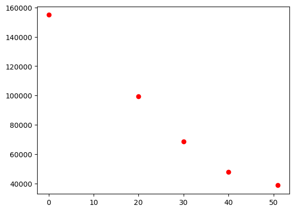
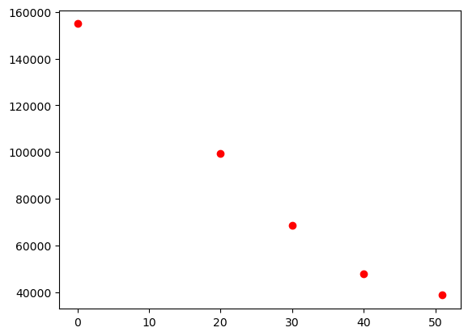
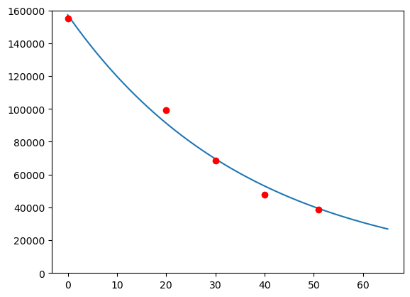

import matplotlib.pyplot as plt
import numpy as np
år = [0, 20, 30, 40, 51]
gårdar = [154977, 99382, 68539, 47688, 38633]
plt.plot(år, gårdar, "ro")
plt.show()
Torodd F. Ottestad
May 3, 2023
Her er eit forslag til løysing av våreksamen i S1 2022. I del 2 er oppgåvene stort sett løyst i Python eller CAS.
Eg kan ikkje lova at løysinga er feilfri… 😊 Gje meg gjerne ein lyd om du ser feil.
Miniatyrbilete: Exam icons created by Freepik - Flaticon
Eksamenssettet finn du hos UDIR: Finn eksamensoppgaver
Skriv så enkelt som råd
\[ \begin{align*} \left(2a\right)^{-1}\cdot \left(\frac{b}{2}\right)^{-3}\cdot \left(a\cdot b\right)^3 &= \frac{1}{2a}\cdot \frac{2^3}{b^3}\cdot a^3 \cdot b^3 \\ &= \frac{2^3 \cdot a^3 \cdot b^3}{2\cdot a \cdot b^3} \\ &= 2^2 \cdot a \\ &= 4a \end{align*}\]
Dagleg produksjonskostnad for \(x\) luer gitt ved \[E(x)=0,2x+40+\frac{20000}{x}\]
Deriverer \(E(x)\)
\[E'(x) = 0,2 + 0 + 20000\cdot \frac{-1}{x^2} = 0,2 - \frac{20000}{x^2}\]
Dermed får me
\[E'(100)=0,2-\frac{20000}{10000} = 0,2-2 = -1,8\]
Dette betyr at ved 100 produserte einingar vil endringa i produksjonskostnaden vera \(-1,8\). Altså vil det bli om lag 1,8 kr billegare å produsere kvar lue om ein aukar produksjonen frå 100 til 101.
\[ \begin{align*} \lim_{x\rightarrow 3} \frac{x-3}{x^2+x-12} &= \lim_{x\rightarrow 3} \frac{x-3}{(x+4)(x-3)} \\ &= \lim_{x\rightarrow 3} \frac{1}{x+4} \\ &= \frac{1}{3+4} \\ &= \frac{1}{7} \end{align*} \]
Skal løysa likninga \(e^{2x}-e^x=2\). Bruker at \(e^{2x}=\left(e^x\right)^2\). Dermed får me \[\left(e^x\right)^2 - e^x = 2\]
Bytter ut \(e^x\) med \(u\) og løyser andregradslikninga for \(u\)
\[ \begin{align*} u^2 - u &= 2 \\ u^2 - u - 2 &= 0 \\ (u+1)(u-2)&= 0 \\ u=-1 &\vee u = 2 \\ \text{Som vil seie at} \\ e^x = -1 &\vee e^x =2 \\ \end{align*} \]
Tar logarimten av begge sider for å få \(x\) for å finna \(x\). Får kun ei løysing, \(x = \ln(2)\), sidan den naturlege logaritmen kun er definert for positive tal.
Set inn \(x=7\) i likninga \[ \begin{align*} \lg(x+3) + \lg (x) &= \lg(a) \\ \lg(10) + \lg(7) &= \lg(a) \\ \lg(10\cdot 7) &= \lg(a) \end{align*} \]
Dermed er \(a=70\).
Når programmet køyrer vil det bli trilla to terningar 1000000 gongar (N). Ein tel opp kor mange av desse kasta summen av terningane blir 9 (gunstige). Til slutt skriv ein ut den relative frekvensen (gunstige/N).
Eleven ønsker å finna ut kva sannsynet for at eit terningkast med to terningar gir summen 9 (eller ein terning kasta to gongar).
Tel opp antall gunstige utfall (her er det lurt å teikne t.d. tabell eller valtre).
Det er \(4\) utfall som gjev \(9\) som sum. (\(3+6\), \(4+5\), \(5+4\) og \(6+3\)).
Vidare er det \(6\cdot 6 = 36\) moglege utfall.
\[P(\text{summen er 9}) = \frac{\text{gunstige}}{\text{moglege}} = \frac{4}{36}=\frac{1}{9}\]
Tabellen nedanfor viser talet på gardsbruk i Noreg for nokre gitte årstal.
| År | Tal gardsbruk |
|---|---|
| 1969 | 154 977 |
| 1989 | 99 382 |
| 1999 | 68 539 |
| 2009 | 47 688 |
| 2020 | 38 633 |
Plottar først datapunkta for å få ei oversikt over korleis det ser ut
import matplotlib.pyplot as plt
import numpy as np
år = [0, 20, 30, 40, 51]
gårdar = [154977, 99382, 68539, 47688, 38633]
plt.plot(år, gårdar, "ro")
plt.show()
Det kan sjå ut som om nedgangen vert mindre og mindre. Ser om det kan passa med ein modell for prosentvis nedgang (eksponentiell modell).
Bruker curve_fit for å finna ein funksjon på forma \(f(x)=a \cdot b^x\)
from scipy.optimize import curve_fit
def f(x, a, b):
return a*b**x
K, E = curve_fit(f, år, gårdar)
a, b = K
x_verdiar = np.linspace(0, 65, 1000)
plt.plot(x_verdiar, f(x_verdiar, a, b))
plt.plot(år, gårdar, "ro")
plt.ylim([0, 160000])
plt.show()
print(f"f(x)={a:.1f}*{b:.3f}^x")
f(x)=157256.2*0.973^xDet kan sjå ut som modellen \[f(x)=157256 \cdot 0,973^x\] passar fint med datapunkta.
I tillegg er det naturleg å tenka at talet på gardsbruk vil ha ein prosentvis nedgang som den i modellen over. På 60-70-talet var det mange små gårdsbruk som har blitt slukt av større gårdar. Med tanke på at me framleis held på med matproduksjon og landbruk, vil denne nedgangen i små gardsbruk (og auken i store) bli mindre og mindre over tid.
Reknar ut \(f(2060-1969)\):
Gårdar i 2060:
f(91) = 13248Det er vanskeleg å seie mykje om dette svaret utan meir bakgrunnskunnskap og andre data. Likevel tenker eg at det er eit rimeleg svar, dersom t.d. automatisering og liknande effektiviserer landbruket, slik at det trengs færre bønder (og gjerne færre gårdar). På den andre sida kan det tenkast at ustabile globale tilhøve på matforsyning gjer at talet på gårdsbruk vert høgare. Som sagt, vanskeleg å seie noko om.
Her kunne me jo løyst likninga \(f'(x)=-1000\), men me prøver oss på ein annan framgongsmåte i Python.
Lagar ei while-løkke som ser på skilnaden mellom eit år og det neste. Av grafen veit/ser me at i starten er nedgangen mykje større enn 1000 i året (ca. 56 000 færre frå 1969 til 1989). Held difor på så lenge skilnaden på to påfølgjande år er større enn 1000 (bruker absoluttverdi)
x = 0
f0 = f(x, a, b)
f1 = f(x+1, a, b)
while abs(f1-f0) >= 1000:
x +=1
f0 = f(x, a, b)
f1 = f(x+1, a, b)
print(f"x = {x}")
print(f"f({x}) = {f0:.1f}")
print(f"f({x+1}) = {f1:.1f}")
print(f"Endring: {(f1-f0):.1f}")x = 53
f(53) = 37224.1
f(54) = 36225.7
Endring: -998.4Ser at når \(x=53\) er nedgangen ca. 1000 gårdsbruk. Dvs. kring år 2022.
sympy
Me kan løysa likninga \(f'(x)=-1000\) med sympy/CAS
# importerer aktuelle funksjonar frå sympy
from sympy import Symbol, diff, Eq, Reals, solveset
# definerer x
x = Symbol("x")
# definerer funksjonen og deriverer
f = a * b**x
df = diff(f, x)
# set opp likninga, og løyser den
likning = Eq(df, -1000)
løysing = solveset(likning, x, domain=Reals)
# skriv ut svaret
print(f"x = {løysing.evalf(3)}")x = {53.4}Dersomm dette skal vera eit binomisk forsøk må me gå ut frå at sannsynet for at kvar av dei består er det same (74 %) og at oppkøyringa til kvar av elevane er uavhengige “delforsøk”. Dvs. at om ein elev stryk (eller består) oppkøyringa så påverkar ikkje det resultatet til dei andre. I tillegg er det her slik at kvar delforsøk kun har to utfall, bestå og ikkje bestå.
I praksis vil nok ikkje sannynet vera det samme for kvar elev. Ein har ulike føresetnader, er ulikt førebudd, vert ulikt påverka av nerver/stress osb. I tillegg kan ein tenka seg at om ein av dei stryk (og dei andre får høyra det) så kan det påverka oppkøyringa til nestemann.
For å finna dette sannsynet kan me simulera dei 12 oppkøyringane mange gongar og telja opp kor mange av dei minst 8 består. Me antar at dette kan sjåast på som eit binomisk forsøk.
import numpy as np
rng = np.random.default_rng()
N = 1000000 # tal simuleringar
n = 12 # tal elevar
p = 0.74 # sannynet for suksess (bestå)
X = 8 # minst X suksess
# simulerer
oppkøyringar = rng.binomial(n, p, size = N)
# tel opp
gunstige = sum(oppkøyringar >= X)
# finn og skriv ut sannsynet
sannsyn = gunstige/N
print(f"P(X >= 8) = {sannsyn:.4f}")P(X >= 8) = 0.8211Ser på gutane og jentene for seg. Multipliserer saman sannsyna sidan dei to hendingane er uavhengige.
N = 1000000 # tal simuleringar
n_g = 7 # tal gutar
X_g = 5 # gutar som består
n_j = 5 # tal jenter
X_j = 4 # jenter som består
p = 0.74 # sannynet for suksess (bestå)
# simulerer
gutar = rng.binomial(n_g, p, size=N)
jenter = rng.binomial(n_j, p, size=N)
# tel opp
gunstige_g = sum(gutar == X_g)
gunstige_j = sum(jenter == X_j)
# finn og skriv ut sannsynet
sannsyn_g = gunstige_g/N
sannsyn_j = gunstige_j/N
# hendingane er uavhengige, dermed får me:
sannsyn = sannsyn_g * sannsyn_j
print(f"P(5 gutar og 4 jenter) = {sannsyn:.4f}")P(5 gutar og 4 jenter) = 0.123270 000 kr på konto, med fast månadleg rentesats \[B(x) = 70000\cdot 1,003^x\]
Knut har ein årleg rentesats på ca. 3,7 prosent.
Løyser likninga \(B(x)=80000\).
from sympy import Symbol, Eq, solveset, Reals
x = Symbol("x")
likning = Eq(70000*1.003**x, 80000)
løysing = solveset(likning, x, domain=Reals)
print(løysing.evalf(3)){44.6}Det tek 45 månader, 3 år og 9 månader, før beløpet har passert 80000 kr.
Aksjefond: 2000 kroner inn kvar månad (0,7 prosent avkasting per mnd.)
Konto: 0.3% renter.
\(T(x)\) er den totale verdien av aksjefond og sparekonto.
Sidan han set inn 2000 kroner kvar månad vil funksjonen gjera eit hopp på desse tidspunkta, og ikkje vera kontinuerleg.
Prøver oss fram i Python.
Simulerer i Python.
import numpy as np
rng = np.random.default_rng()
# antall kast
N = 1000000
# dei tre terningane N kast
t1 = rng.integers(1, 7, N)
t2 = rng.integers(1, 7, N)
t3 = rng.integers(1, 7, N)
# produktet av terningane, per kast
prod = t1 * t2 * t3
# tel opp gunstige utfall
gunstige = sum(prod > 100)
# finn sannsynet
sannsyn = gunstige / N
print(f"Sannsynet for å vinna er {sannsyn:.4f}")Sannsynet for å vinna er 0.0924Køyrer programmet eit par gongar og ser at resultatet vert ganske likt. Sannsynet for å vinna er ca. 0,092
Breidda på rektangelet er \(2\cdot a\) medan høgda er \(b\), som er \(y\)-verdien til skjæringspunktet mellom linja frå \((0, 2)\) til \((2, 0)\) og \(x=a\).
Linja har stigningstal \(-1\) og konstantledd \(2\). Dvs. \(f(x)=2-x\).
Dermed er høgda til rektangelet \(2-a\). Arealet vert då \[T = 2 \cdot a \cdot b = 2\cdot a \cdot(2-a) = 4a - 2a^2\]
Definerer \(T(a)\) som funksjon, deriverer og finn den \(a\)-verdien som gjev størst \(T\). (størst sidan \(T\) er ein konkav/“sur” parabel).
from sympy import Symbol, diff, Eq, solveset, Reals
a = Symbol("a")
T = 4*a - 2*a**2
dT = diff(T, a)
likning = Eq(dT, 0)
løysing = solveset(likning, a, domain=Reals)
print(løysing){1}Det vil seie at \(a=1\) gir størst areal. Då er \[T(1)=4\cdot 1 - 2\cdot 1^2 = 2\]
\(2\) er den største verdien \(T\) kan ha.
Temperaturen \(T\) etter \(t\) min er
\[\ln(T-T_0)=-k\cdot t + r\]
der \(T_0\) er romtepmeratur og \(k\) og \(r\) konstantar.
Får oppgitt at - \(T_0=22\) - \(T=82\) når \(t=0\) - \(T=66\) når \(t=2\)
Dermed har me likningane
\[\begin{align*} \ln(82-22) &= -k\cdot 0 + r &&=r \\ \ln(66-22) &= -k\cdot 2 + r &&= r-2k \end{align*} \]
from sympy import Symbol, Eq, nsolve, solveset, Reals, log
# definerer r og k
r = Symbol("r")
k = Symbol("k")
# definerer likningane
l1 = Eq(log(82-22), r)
l2 = Eq(log(66-22), r-2*k)
# finn numerisk verdi for r og k
løysing = nsolve([l1, l2], [r, k], [1,1])
# definerer t og ny likning med verdiar for r og k
t = Symbol("t")
r_n = løysing[0]
k_n = løysing[1]
l_temp = Eq(log(40-22), -k_n * t + r_n)
# løyser for t og skriv ut.
ny_t = solveset(l_temp, t)
print(f"t = {ny_t.evalf(3)}")t = {7.76}Det tar rett over 7 min og 45 sek før temperaturen når 40 grader.
Ser på dei ulike grafane og ser at
Dermed er A grafen til \(f\) og D er grafen til \(f'\).
Ser vidare at
Dermed er C grafen til \(g\) og B er grafen til \(g'\).